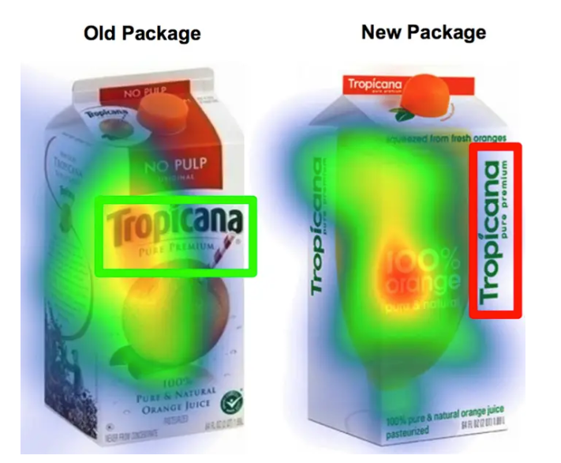
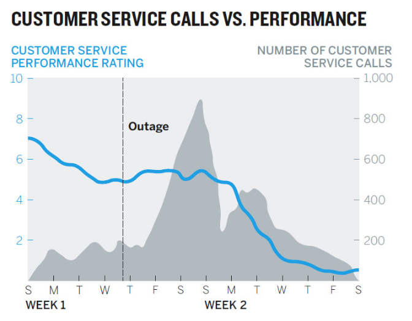
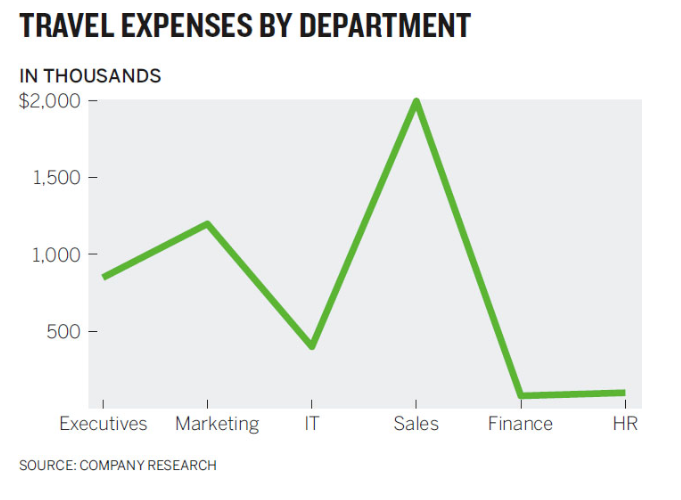
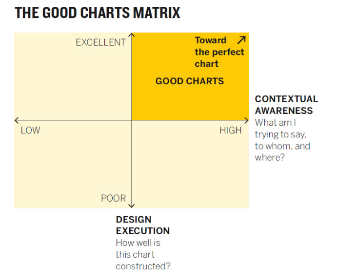
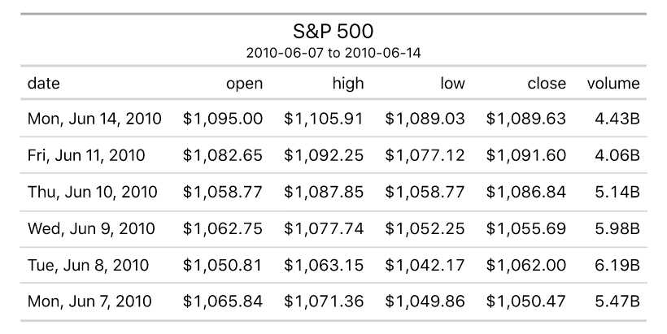
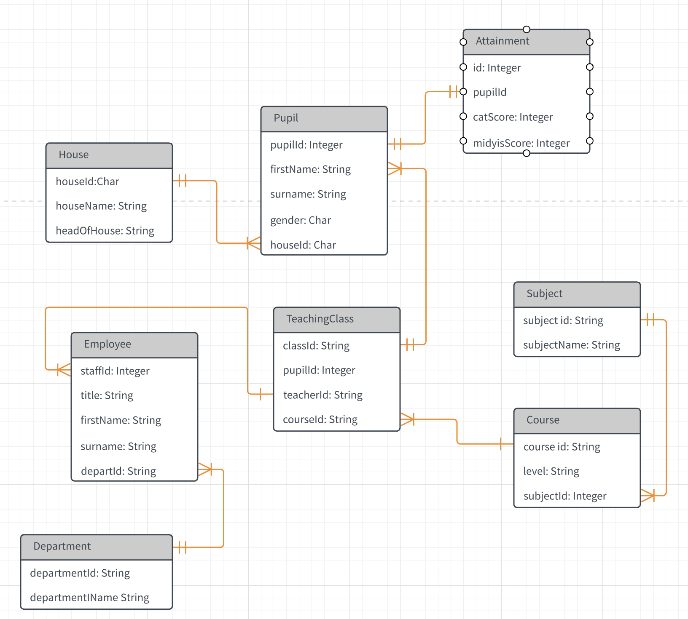
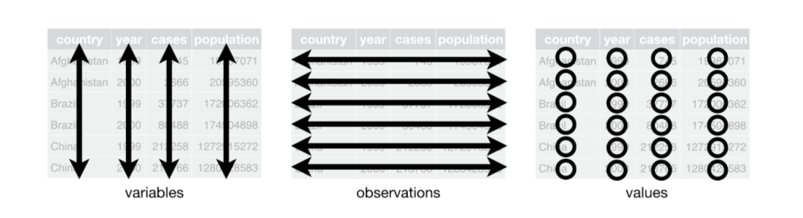

Above all else, show the data
Tufte

Try to tell me the message in the below paragraph
getting Lectured trainingoutsideofcollege is-even-more-expensive-than it is in college. aWeek’sworth of trainingcancostmore dlkjalkdfald;kjfasdlkjfasd than a semester of school here at BYUI……..Duetothisexpenselearning howtodigest onlinematerial butmaybeorand get up to speedonatopic before.going.to.the.expertfor questions is a valuableskill todevelop. I expect que tu have completedthe assigned-reading-material-before class begins. You will also have work tocompleteafterclass.
Conspiracy Theory of Charts

Only do it for transformations: ft -> meters
I love his symphony metaphor.
When deeply complex charts work, we find them effective and beautiful, just as we find a symphony, which is another marvelously complex arrangement of data that we experience as a coherent whole.


Data and how to handle it isn’t trivial



You should never attempt all three of the above in one sheet in Excel or Google Sheets.
Using multiple tabs or sheets can make this possible but still not recommended.
Sheets is a sidenote, not our primary tool.